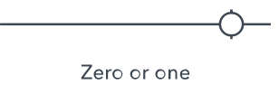
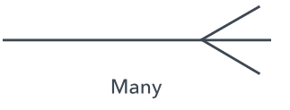
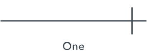
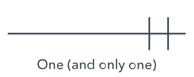
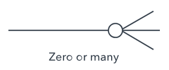
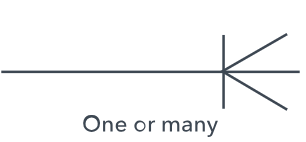

Entiteedi Suhete Diagrammid (ERD)
Andmebaaside loogilise struktuuri visualiseerimine
Mis on ERD diagrammid?
Olemisuhete diagrammid (ERD) ehk ER-mudelid näitavad andmebaaside loogilist struktuuri ja toovad esile konkreetsete mõistete või olemite (st objektid, inimesed, kohad jne) omavahelised seosed antud teemavaldkonnas. Neid diagramme kasutatakse tavaliselt äriprotsesside demonstreerimiseks ja need on paljude rakenduste lahutamatu osa.
ERD diagrammide kasutusalad
Andmebaasi kujundamine
ERD-d kasutatakse peamiselt relatsiooniliste andmebaaside modelleerimiseks, määratledes osalevad entiteedid ja nende suhted.
Andmebaasi tõrkeotsing
Need aitavad analüüsida olemasolevaid andmebaase, et tuvastada ja lahendada loogika või rakenduse probleeme.
Ärinformatsiooni süsteemid
ERD-d sujuvdavad protsesse, selgitades välja, kuidas entiteedid omavahel suhtlevad äritöövoogudes.
Dokumenteerimine
Annavad selge visuaalse ülevaate andmestruktuuridest ja nende seostest süsteemi dokumenteerimiseks.
ER mudelis kasutatavad sümbolid
ER mudelit kasutatakse süsteemi loogilise vaate modelleerimiseks andmeperspektiivist, mis koosneb järgmistest sümbolitest:
Ristkülikud
Ristkülikud tähistavad üksusi ER-mudelis. Esindavad peamisi andmeobjekte või entiteete.
Ovaalid
Ovaalid esindavad ER-mudeli atribuute. Näitavad entiteetide omadusi ja karakteristikuid.
Rombid
Rombid esindavad üksuste vahelisi suhteid. Näitavad, kuidas erinevad entiteedid omavahel seotud on.
Jooned
Jooned tähistavad olemite ja olemikomplektide atribuute, millel on muud suhtetüübid.
Topeltovaalid
Topeltovaalid esindavad mitme väärtusega atribuute, mis võivad sisaldada mitut väärtust.
Topeltristkülikud
Topeltristkülik tähistab nõrka olemit, mis sõltub teisest entiteedist oma eksistentsis.

ERD ühenduselemendid
| Nimetus | Visuaalne esitus | Kirjeldus |
|---|---|---|
| One-to-Many suhe |  |
Üks entiteet võib olla seotud mitme teise entiteediga |
| One-to-One suhe |  |
Üks entiteet on seotud täpselt ühe teise entiteediga |
| Kohustulik suhe |  |
Suhe peab alati eksisteerima |
| Vabatahtlik suhe |  |
Suhe võib eksisteerida, kuid ei pea |
| Many-to-Many suhe |  |
Mitu entiteeti võib olla seotud mitme teise entiteediga |
| Zero or One suhe |  | Entiteet võib olla seotud null või ühe teise entiteediga |
| Many suhe |  | Entiteet võib olla seotud mitme teise entiteediga |
| One suhe |  | Entiteet on seotud täpselt ühe teise entiteediga |
| One (and only one) |  | Entiteet peab olema seotud täpselt ühe ja ainult ühe entiteediga |
| Zero or Many |  | Entiteet võib olla seotud null või mitme teise entiteediga |
| One or Many |  | Entiteet peab olema seotud vähemalt ühe või mitme entiteediga |
Võtmed andmebaasides
Primaarvõti (Primary Key)
Kandidaatvõti, mis on valitud relatsiooni kirjeid unikaalselt identifitseerima
Välisvõti (Foreign Key)
Atribuut, mis loob lingi kahe tabeli vahel ja viitab teise tabeli primaarvõtmele
Liitvõti (Composite Key)
Kui võti sisaldab mitu atribuuti, siis nimetatakse seda liitvõtmeks
Lihtvõti (Simple Key)
Üldine mõiste mis tahes atribuudile, mis suudab unikaalselt tuvastada entiteedi